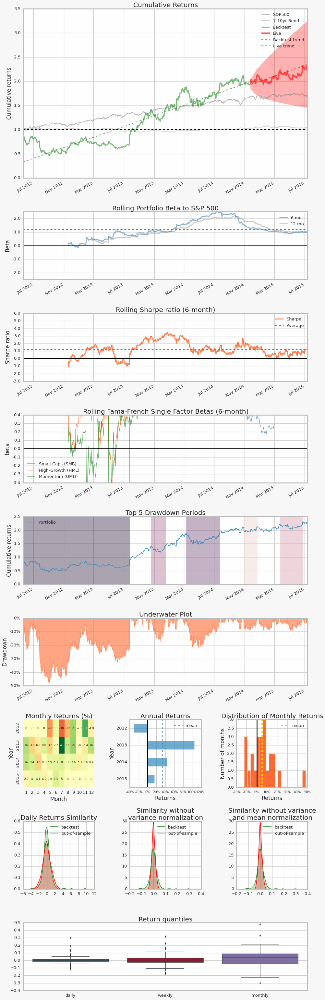
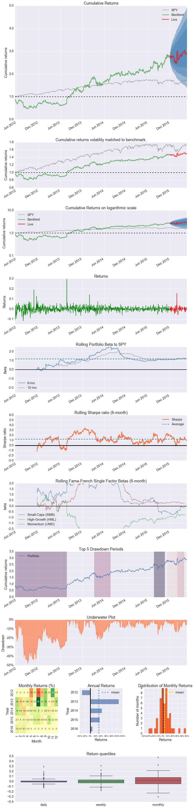

Single stock analysis example in pyfolio
Here's a simple example where we produce a set of plots, called a tear sheet, for a stock.
Import pyfolio
%matplotlib inline
import pyfolio as pf
Fetch the daily returns for a stock
stock_rets = pf.utils.get_symbol_rets('FB')
Create a full tear sheet for the single stock
This will show charts about returns and shock events. As an example, we set the first 80% of the stock's history to be in-sample, which controls the cone plot. The Bayesian tear sheet is also enabled.
pf.create_full_tear_sheet(stock_rets, backtest_days_pct=0.8, bayesian=True)
Entire data start date: 2012-05-21 00:00:00
Entire data end date: 2015-07-13 00:00:00
Out-of-Sample Months: 7
Backtest Months: 30
Backtest Out_of_Sample All_History
sortino_ratio 1.54 3.04 1.60
omega_ratio 1.16 1.28 1.17
max_drawdown -0.48 -0.09 -0.48
calmar_ratio 0.79 3.70 0.77
annual_return 0.38 0.34 0.37
stability 0.84 0.54 0.87
sharpe_ratio 0.78 1.52 0.83
annual_volatility 0.49 0.22 0.45
alpha 0.17 0.29 0.19
beta 0.97 1.04 0.98
Worst Drawdown Periods
net drawdown in % peak date valley date recovery date duration
0 47.90 2012-05-21 2012-09-04 2013-07-25 309
1 22.06 2014-03-10 2014-04-28 2014-07-24 99
2 17.34 2013-10-18 2013-11-25 2013-12-17 43
4 9.21 2014-10-28 2014-11-19 2014-12-22 40
3 9.20 2015-03-24 2015-05-12 2015-06-23 66
2-sigma returns daily -0.055
2-sigma returns weekly -0.111
dtype: float64
Stress Events
/opt/miniconda/lib/python2.7/site-packages/matplotlib/cbook.py:137: MatplotlibDeprecationWarning: The "loc" positional argument to legend is deprecated. Please use the "loc" keyword instead.
warnings.warn(message, mplDeprecation, stacklevel=1)
/opt/miniconda/lib/python2.7/site-packages/theano/scan_module/scan_perform_ext.py:133: RuntimeWarning: numpy.ndarray size changed, may indicate binary incompatibility
from scan_perform.scan_perform import *
mean min max
EZB IR Event 0.002 -0.091 0.077
Apr14 0.001 -0.052 0.073
Oct14 -0.002 -0.061 0.046
[-----------------100%-----------------] 2000 of 2000 complete in 4.7 sec

